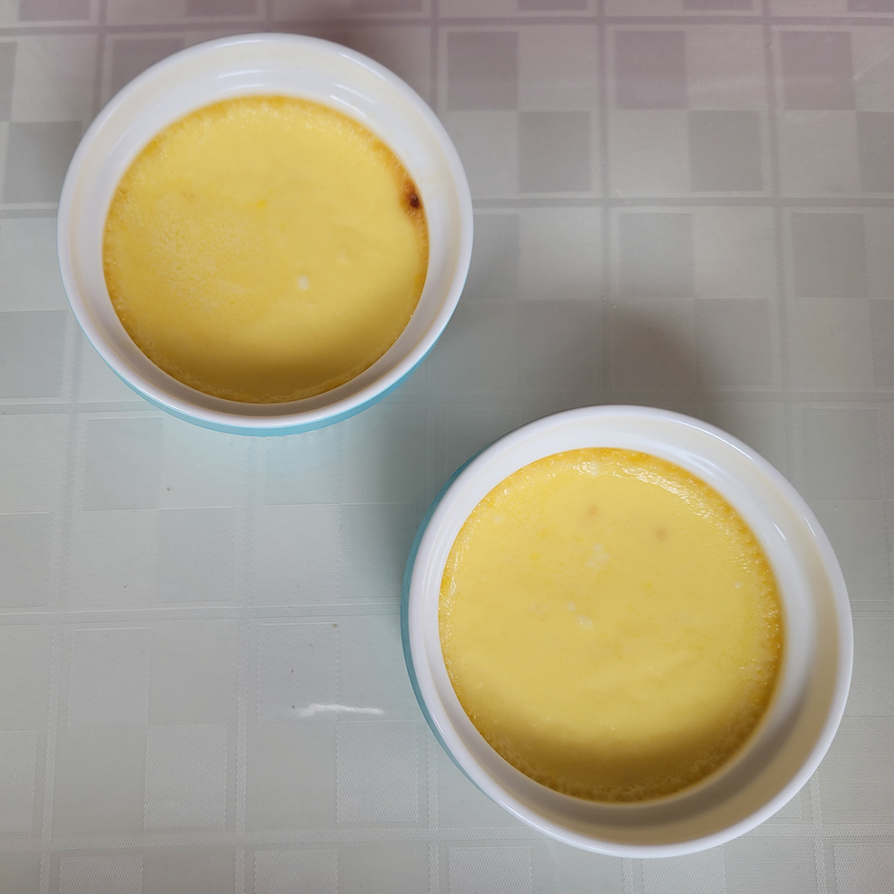
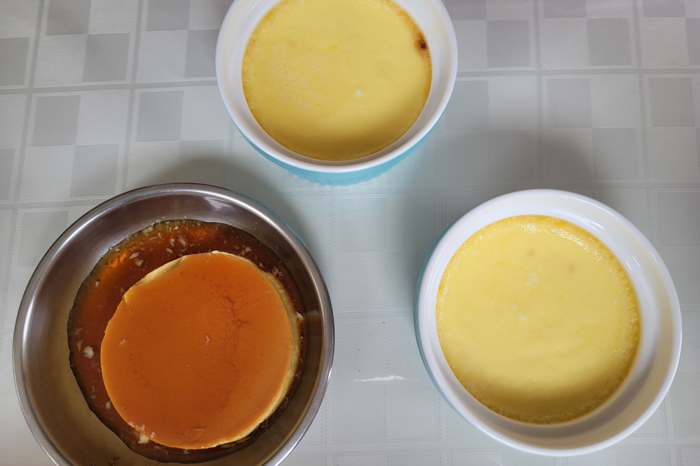
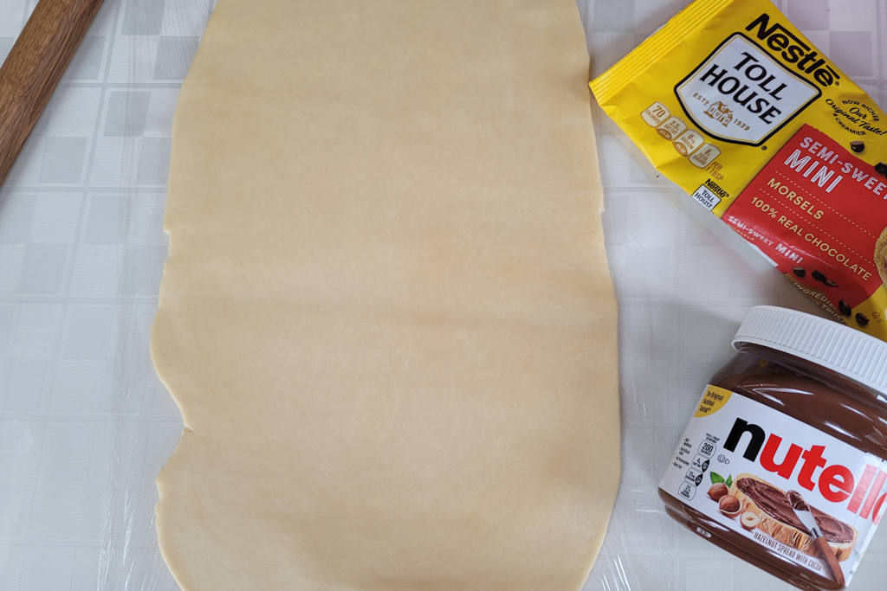
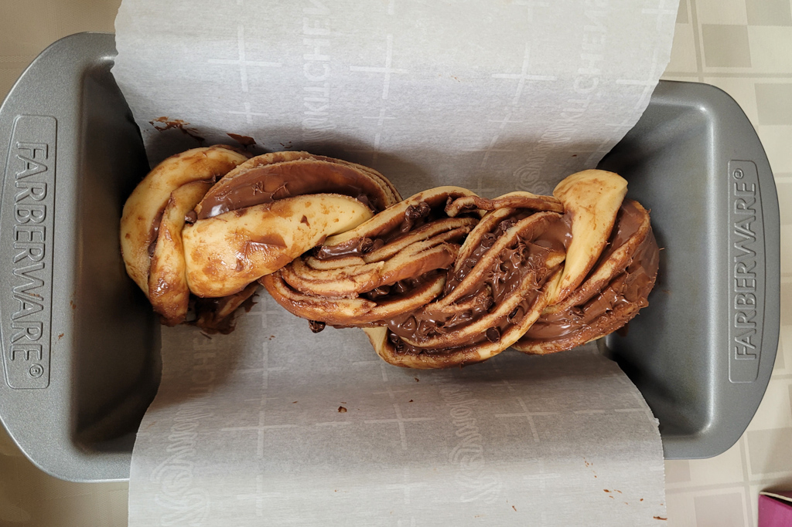
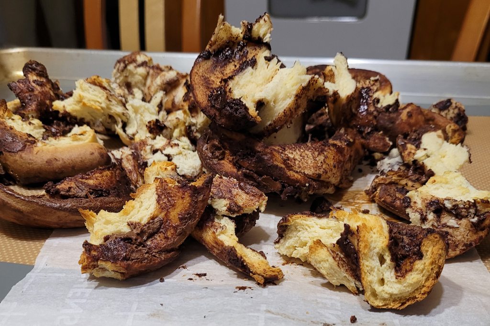

April Baking Shenanigans
May 2 - Written by Bonnie and Emily
Can you believe it's already May? The month of April was full of lots of baking but with that comes some baking fails.
After seeing Babish make crème caramel with Dominique Ansel, I knew I had to make it myself. So, I immediately went and purchased a set of ceramic ramekins and got to work on the caramel the second I received them in the mail. If you’re not familiar with making caramel, it is a much more stressful process than it sounds. It also requires a lot of patience and trust which is tough because the longer I waited, the more I felt like it wasn’t going right. After countless minutes of trusting the process later, the sugar mixture began to turn the desired shade of amber and it was looking the way it should, things were going quite well.
Little did I know that the time between making the caramel and pouring it into the ramekins was much shorter than it appeared in the video. By the time I went to pour the caramel, it had already begun to set and become a stretchy moldable hot mess rather than something pourable. So after I ruined this batch of caramel, I had to go back to the long waiting game of watching my sugar mixture turn into caramel and hoping the sugar isn't crystalizing. After having failed the first time, I moved the ramekins next to the stove as I only had a few short minutes to pour in the caramel before it set. After pouring in the caramel, the egg mixture was super simple to put together, and before I knew it, they were ready to bake!
Once the crème caramel was baked, it had to cool and chill so if this is something you want to make, know that you will have to make it ahead of the time you want it. This crème caramel was smooth and silky and had the right amount of sweetness. The caramel melts and creates a lovely sauce that compliments the dessert very well. Something I would recommend is that you don’t have to pour a lot of caramel into each ramekin and depending on the size of your ramekin, halving the recipe will produce about 2x as many crème caramels as listed in the recipe. I used 8 oz ramekins and it made about 5 crème caramels.
After making some crème caramels, I set out to make Claire’s brioche pigs in a blanket. The second I saw Claire make these on the Munchies YouTube channel, I knew I wanted to make them the second I received a new stand mixer. So with a working stand mixer and all the needed ingredients, I set out to work. This dough seemed relatively simple; however, as I was making the dough, something felt a bit off and not quite like the other doughs I’ve made before from Claire’s book. Nevertheless, I went with it and just hoped for the best as the dough needed to chill in the fridge for an ample amount of time.
The next day, I prepped my hot dogs and took out my dough to begin wrapping the hot dogs. As I was kneading the dough and dividing it up, the dough felt much tougher and hard to work with than it appeared in the video and that’s when I felt like something was wrong. However, I had already gone this far into the process, I didn’t want to scrap it in case things were actually going well. So after getting them all wrapped and set on the baking sheet, it was just a matter of waiting for the dough to proof before baking. Now, I made these on a fairly chilly day so after waiting much longer than Claire said, the dough still looked about the same as it had at the start. And since this was supposed to be a brioche dough, I didn’t want to put it in a warm place to proof and have all the butter ooze out of the dough. So after waiting a long time, I placed them in the oven and hoped they wouldn’t turn into pigs on an air mattress.
Once they were baked, they looked quite good. They weren’t as soft or fluffy as they should have been but they looked about right and they tasted fairly good so I would say it was somewhat of a success. I think if I am to make them again, I should work on mastering the brioche dough first before making the pigs in a blanket. I didn’t make Claire’s dipping sauce for these pigs in a blanket but they were definitely tastier with some sort of condiment. This is a trickier recipe but I would recommend making these for your next party or get together as they will surely be a crowd pleaser!
Last but not least, I tried making the famous Breads Bakery Chocolate Babka. If you’re not familiar with babka or Breads Bakery in NYC, it’s this soft and fluffy bread full of chocolatey goodness. If you ever find yourself in NYC, definitely give this place a try, it is one of my all time favorite bakeries in New York.
This recipe included a few ingredients I didn’t have so I had to improvise and make do with some substitutions. More specifically, I substituted the flours and the type of yeast as I didn’t have any fresh yeast or bread and pastry flour on hand. Now, these substitutions may have been where I went wrong but I’m not great with making yeasted doughs so who knows. So after the dough was done mixing, it didn’t feel quite right or look the way it did in the video I was following. I just started and things weren’t looking so hot already but like I tend to do, I went with it and hoped for the best.
After letting the dough rest and chill in the fridge for a period of time. I rolled it out in preparation for the best part. While rolling out the dough, the dough felt tough and hard and wasn’t soft and fluffy like the doughs I’ve made in the past. Since I also halved the batch, I didn’t have to roll it quite as big so once it looked about the proper thickness, I stopped and spread an ample amount of Nutella and mini chocolate chips all over the dough. Once that was done, I rolled it up into a log, sliced it down the middle, and began twisting the dough into the signature babka loaf. This twisted loaf looked quite about right besides the fact that the dough felt off; however, after leaving the dough in the pan for a period of time, it began unraveling and my faith in this dough began to fade. I knew at that point that I was trying to save something that couldn’t be saved.
After having lost all hope in my babka, I went ahead and baked it to see how it’ll turn out. But, since the dough was unable to proof, it wasn’t able to adequately bake in the oven leaving some over baked and under baked areas. To try and salvage it, I deconstructed the loaf onto a sheet pan in hopes that it could at least bake and be edible. However, even doing that couldn’t save the babka, it was a lost cause. I had hoped that the amount of chocolate in it could save it but no amount of chocolate could have saved that mess.
So, that was a disaster…
But, that hasn’t discouraged me to not try again so the next time I make chocolate babka, I plan to use a different recipe in hopes that it will result in a more successful babka. Ingredient substitutions tend to work out most of the time but in this case, it didn’t and that’s okay. Not all bakes will turn on successful and that is all just a part of the science of baking.